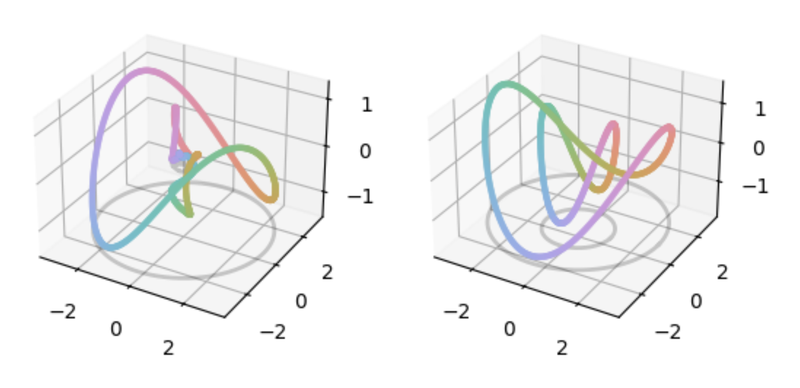
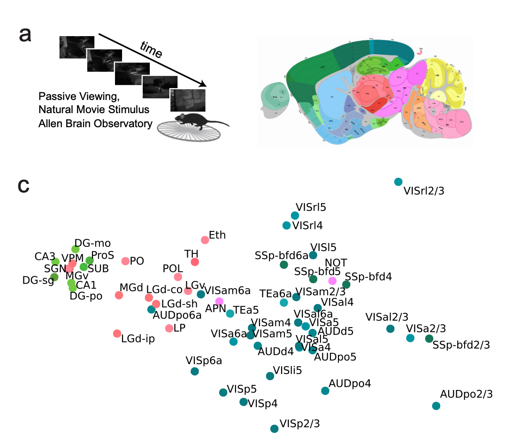
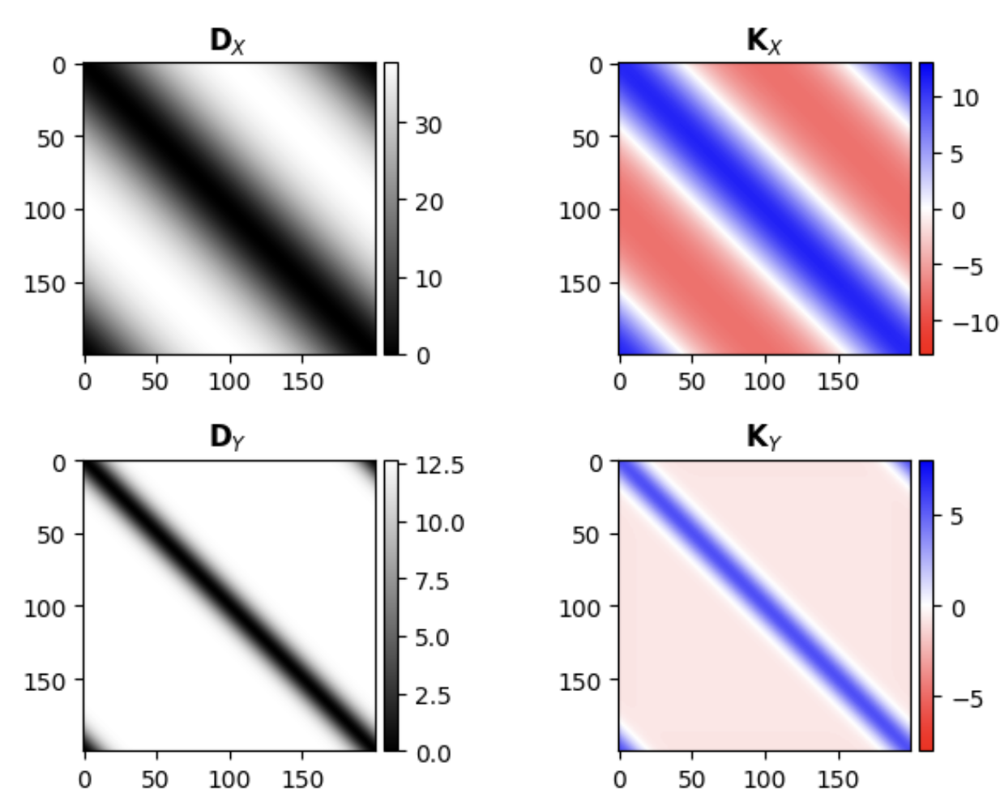
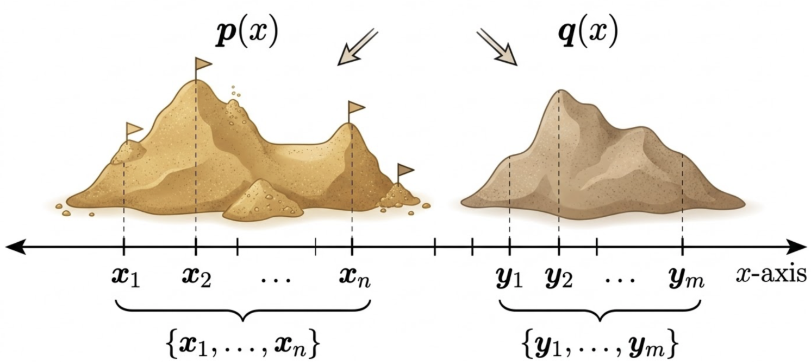

Comparative Analysis of Neural Population Codes#
This website serves as a central hub of Google CoLab jupyter notebook tutorials on different metrics to compare neural representations.
While notebooks should be self-contained or contain references to required background material, they’re designed to complement the COSYNE 2026 Tutorial: Comparative Analysis of Neural Population Codes. You can watch the recorded live stream of the tutorial on here on YouTube!
Authors: Alex Williams, Sarah Jo Venditto, Grant Zempolich, & Pierre-Etienne Fiquet
Build conceptual and mathematical intuition of Procrustes distance and it’s extension to linear invariance.

Authors: Alex Williams, Sarah Jo Venditto, & Shujun Xiong
Demonstrate how Procrustes distance can be used on real data: computing neural similarity between brain regions and animals using data available through AllenSDK.

Author: Alex Williams
Build mathematical intuition of RSA and CKA, understand conditions under which they are equivalent, and show how these metrics are related to Procrustes distance.

Author: Chaitanya Kapoor
Soft-matching and partial soft-matching: Extend Procrustes distance to situations when 1-to-1 matches between neurons is not possible or feasible.
